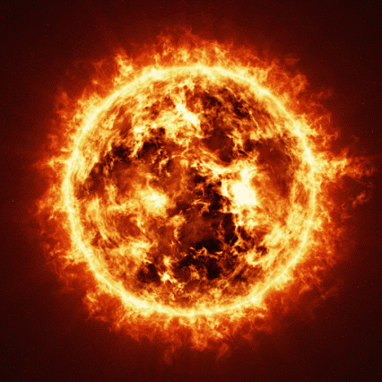

Thrauma encontrava-se sentada no chão da sala, imóvel como uma estátua de museu que nunca pediu para ser exposta, fixando os olhos no ponteiro do relógio. Seus músculos permaneciam inertes, mas sua expressão facial gritava aquilo que qualquer psicólogo chamaria de “crise de perda total de controle”.
E a pelúcia, você pergunta? Estava repousada a poucos metros à direita, em posição tão estratégica quanto desconfortável, encarando a parede com a serenidade de quem acompanha o tempo passar, como se também tivesse marcado consulta com o relógio.
— H-hmpf… — resmungou Thrauma, apertando o tecido da yukata como quem tenta estrangular a própria roupa.
Com os olhos semicerrados, arriscava olhares furtivos para a versão de pano de si mesma, mas logo desviava, apavorada com a possibilidade irracional de que um contato visual direto pudesse decretar sua sentença final.
Era, francamente, uma cena patética para uma entidade de sua estatura cósmica: espiar de canto de olho, fingir que nada estava acontecendo e, em seguida, voltar desesperadamente o olhar para o relógio, como se o boneco estivesse, a qualquer momento, prestes a piscar de volta.
“Que sensação agoniante! É como estar matriculada em um curso integral de tortura avançada contra a vontade! Essa coisa de pano tem segredos, eu sinto no meu âmago!”, pensava Thrauma, enquanto o suor escorria pelo seu rosto com a dedicação de um estagiário explorado. “Eu não suporto mais, isso é um insulto! Santa Ruína, Meu Pai, faça o favor de me blindar contra este vexame!”
Cinco minutos se arrastaram como uma aula de quatro horas sem intervalo. Para Thrauma, parecia ter atravessado a eternidade. Até que então, finalmente, levantou-se, suspirou e ergueu a mão.
— Já chega. — declarou, num tom tão controlado que qualquer observador suspeitaria que seu colapso anterior não passara de um experimento de laboratório.
Estalou os dedos, e, em um corte abrupto, lá estavam ela e a pelúcia: suspensas na vastidão do espaço.

Diante delas, um sol colossal, irradiando autoridade e plasma em movimentos tão lentos quanto incompreensíveis.
Thrauma segurou a pelúcia com força, estudando seus botões oculares por breves segundos, antes de redirecionar o olhar ao astro. Inspirou fundo e, com desdém meticulosamente construído, murmurou:
— Hum.. cuidar de um boneco de pano inútil, quem ela pensa que eu sou, aliás? O que ela estava pensando sequer com essa coisa? .. Na verdade, por que é que eu me incomodei tanto?
Aperto firme, impulso calculado: a pelúcia foi arremessada ao coração flamejante da estrela. Thrauma observou o espetáculo com uma satisfação estética, não só pela purificação simbólica do objeto, mas porque sabia que o gesto renderia dividendos emocionais ainda mais preciosos, o furor e a decepção inevitáveis de sua irmã quando descobrisse.
Thrauma permitiu-se um sorriso de autossatisfação. Num gesto de conclusão, retirou-se do cenário estelar e, com a eficiência de um atalho cósmico, reapareceu em sua própria residência.
— Hoah! Enfim paz.. — suspirou, aliviada.
Girou a maçaneta, entrou na sala e seu olhar encontrou algo que desmontou em segundos a satisfação recém-conquistada.
O rosto que antes irradiava alívio foi rapidamente substituído por uma máscara perplexa, a típica expressão de quem descobre que a disciplina cancelada voltou a ser obrigatória.
Lá estava ela: a pelúcia.
Sentada no chão da sala, comportada como um gato que jura inocência mesmo depois de destruir as cortinas. Nenhum fiapo fora do lugar, nenhum sinal de incêndio solar, nenhuma prova de sua recente execução. Tecidos intactos, costuras imaculadas, aparência virginal.
Em palavras curtas: inteira. Desafiadoramente inteira.
Thrauma simplesmente recusava-se a aceitar o que via diante de si. A mente negava, os olhos confirmavam, e juntos eles criavam um colapso cognitivo á mesma proporção de um congresso inteiro debatendo se água com gás é realmente água.
Instintivamente, ela soltou um grito. Não qualquer grito, mas O grito. Um rugido tão descomunal que reverberou por cada canto da criação, alcançando até buracos negros que provavelmente mandaram reclamações formais ao departamento de acústica cósmica.
A única exceção, é claro, foi Laetitia. Esta, em algum canto da criação, estava de fones de ouvido, cantarolando alegremente enquanto ressuscitava universos extintos como quem passa pano em corredor de empresa que aboliu a noção de faxina desde a ditadura.
Na moral, eu também queria um fone desse tipo. Porque, ao contrário da Laetitia, eu não tinha. Então o berro foi tão violento que meus tímpanos implodiram em estéreo.
Sim, tá sangrando.
Sim, dói pra caramba.
Alguém poderia, por gentileza, providenciar um otorrino antes que eu precise incluir essa tragédia no relatório final?
— Mas, mas, mas.. mas.. QUÊ? MAS COMO?! ISSO É IMPOSSÍVEL! EU TE ARREMESSEI NO SOL, SUA DESGRAÇA! — bradou Thrauma, incrédula, como se tivesse acabado de ver alguém sobreviver a um chute no estômago da própria realidade. — Você deveria… deveria ter…
Incapaz de completar a frase, levou a mão ao rosto, respirando fundo como quem tenta segurar um colapso nervoso. Após alguns instantes de pseudo-controle, fechou os punhos, os dentes rangeram e uma aura sombria começou a ondular em volta de seu corpo, enquanto seus olhos fixavam a criatura de pano. A criatura, por sua vez, mantinha a típica expressão de pelúcia barata: apatia total. O que, claro, só alimentava ainda mais a fúria de Thrauma.
— Ah, então é isso? Você acha que pode ficar aí, me encarando com essa cara e me tratar como piada? Pois saiba que vou fazer você se arrepender até a última fibra costurada, seu trapo insolente! — declarou, agora ostentando um sorriso tão psicótico que faria qualquer ser vivo recolher-se em insignificância diante da presença dela.
E, naquele momento, ficou claro: não era mais um desentendimento doméstico entre irmã e brinquedo. Era guerra. Uma guerra irracional, improvável, sem estatuto nem convenções de Genebra.
E Thrauma, obviamente, não tinha a menor intenção de sair derrotada desse teatro maluco.